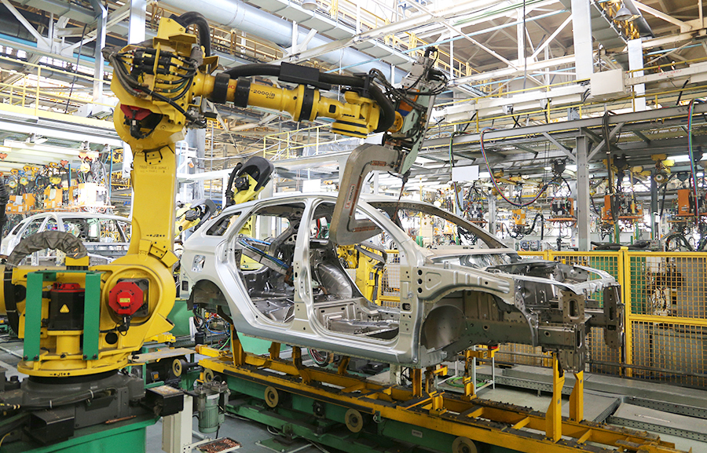
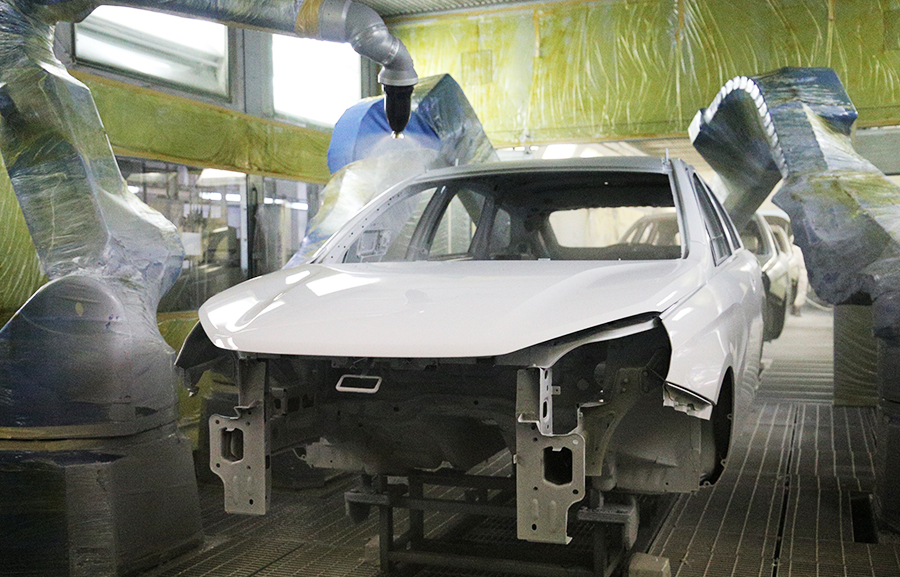
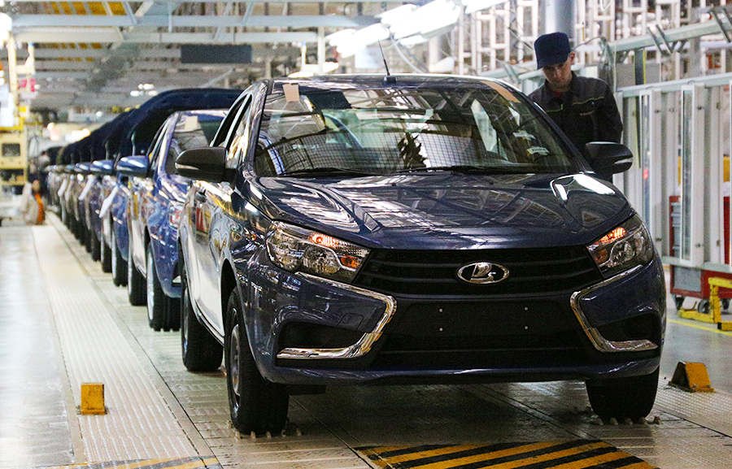
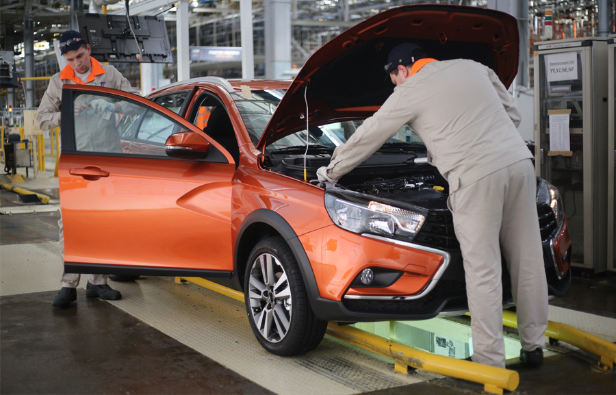

ИЖЕВСКИЙ АВТОМОБИЛЬНЫЙ ЗАВОД




Применены принципы японской производственной философии «кайдзен»:
- Ориентация на потребителя
- Всеобщий контроль качества
- Роботизация
- Система предложений
- Автоматизация
Автомобили, которые мы производим:
- LADA Vesta
- LADA Vesta SW
- LADA Vesta SW Cross
- LADA Vesta Cross
| Цены | |
|---|---|
| LADA Vesta | от 1 121 900 р |
| LADA Vesta | от 1 213 900 р |
| LADA Vesta | от 1 328 900 р |
| LADA Vesta | - |